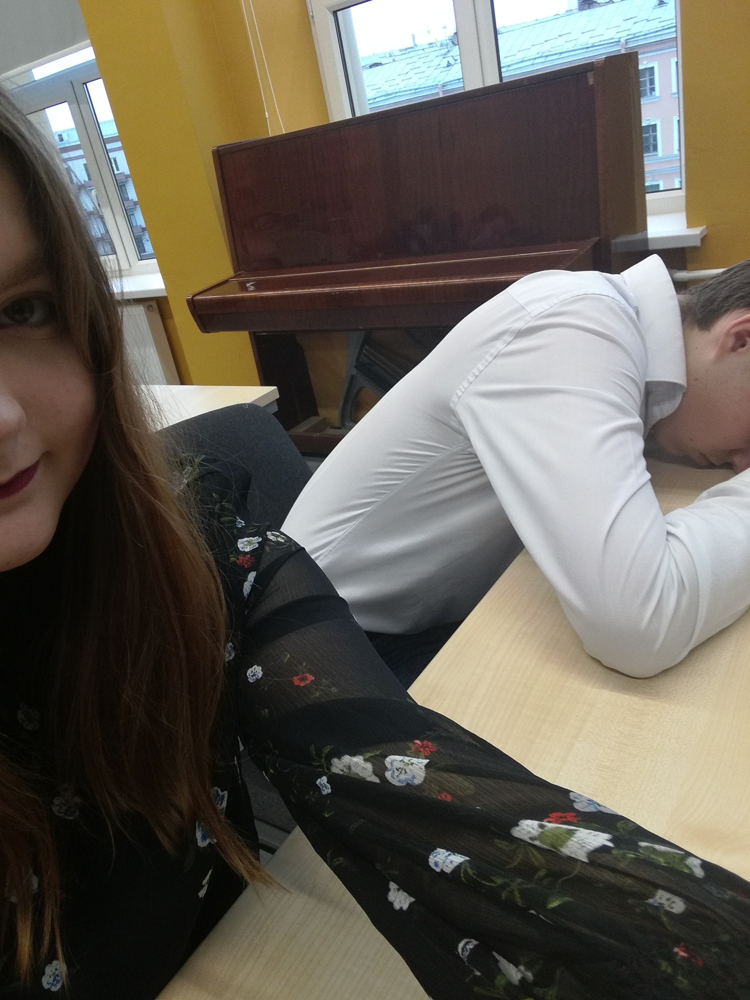
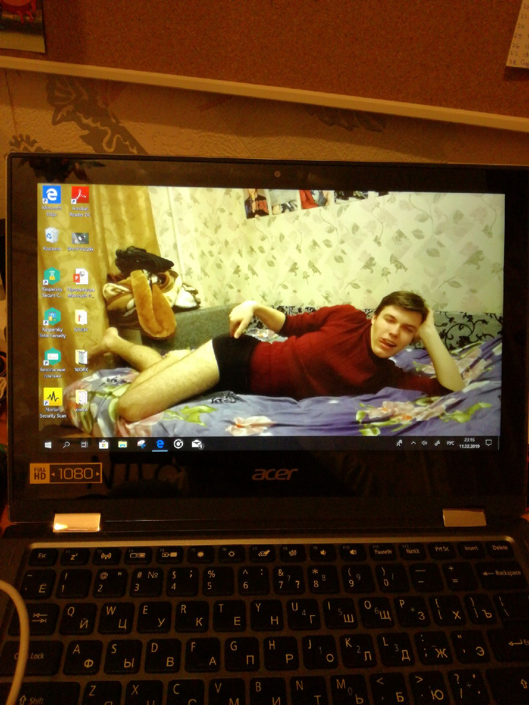
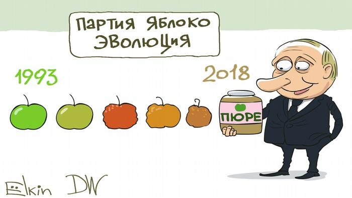
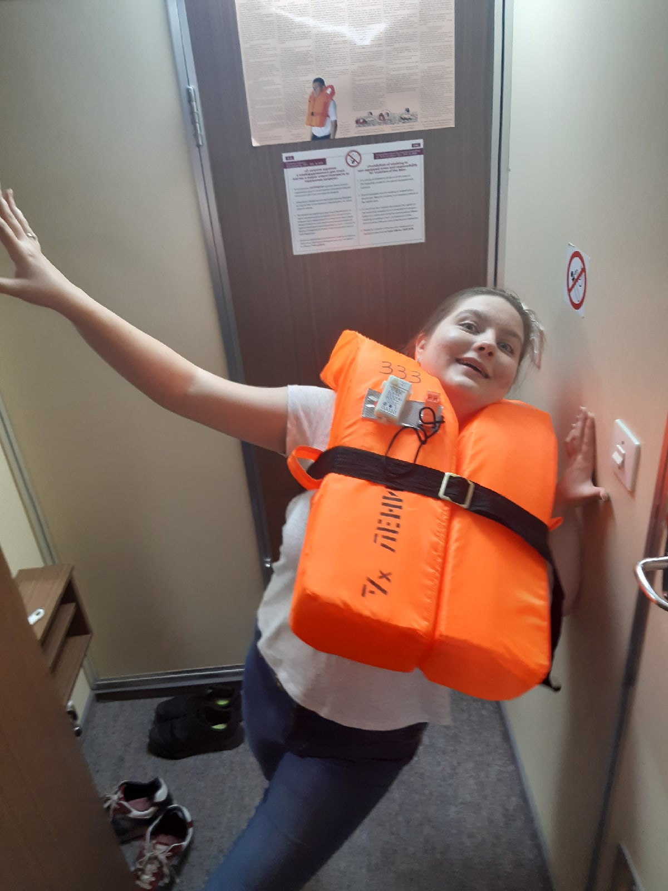
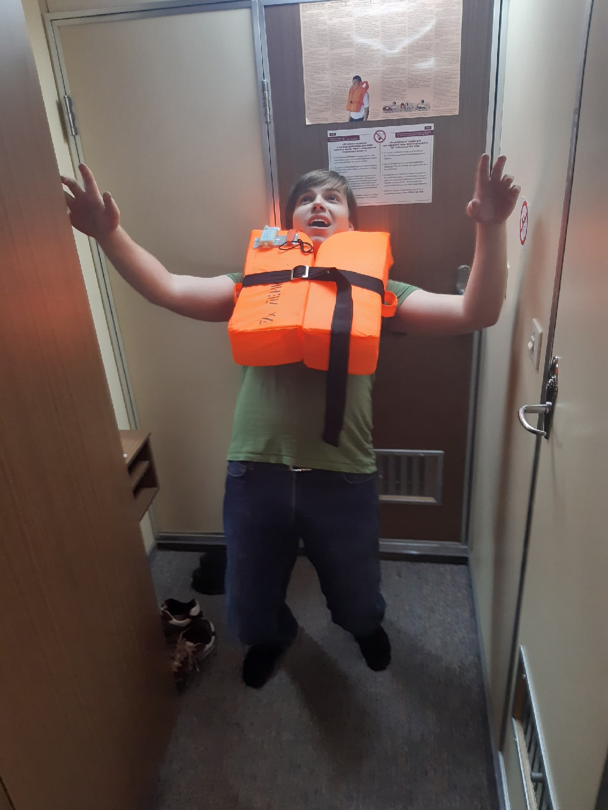

О нас
Прикольно, что я решил сделать что-то такое странное... сайт для близкого человека. Просто
хотелось что-то сделать приятное для тебя! Вот и додумался.
Конечно, может быть такое, что затея не
оправдается, но надеюсь, что я сделал не так плохо!
Вот мы уже 4,5 года вместе, а любовь все так же не угасла! Бывает вспоминаю наше знакомство, и думаю, как же странно получилось: через своего, на тот момент, лучшего друга мы познакомились, толком не общались, но так все завернулось, что мы даже пошли на свидание! (прим. автора - Конечно, я помню, что ты сделала все умно и по красоте). Хотя и вспоминаются многие моменты не без кринжа и неловкости, а некоторые и со стыдом...
 Мы с тобой впервые посетили совместное мероприятие: мамин юбилей. Было неожиданно, но супер приятно.

С тобой я провел свой первый Новый год не дома. Было супер странно, что я мог выбирать что-то
самостоятельно, а ещё и не нужно при этом всегда принимать сторону родителей.
Так сказать, началось
мое
становление, как личности, и обретение независимости.
Начиная со второго курса, я решил интенсивно учиться, потому что всегда смотрел на тебя и на твои
успехи,
и понял, что хочу так же, а главное, что могу так же!
И какого было моё удивление, что учиться
отлично
реально, так ещё и зарабатывать можно на своих знаниях!
Тогда же ты открыла для меня корейскую
кухню!
С того момента я не перстаю ходить в корейские кафе и рестораны!
ААА моя первая масочка! Обожаю с тобой проводить время, особенно, когда мы делаем что-то, чего я в жизни ни разу не делал или делаю крайне редко (да, звучит странновато...)

Но самый счастливый момент моей жизни это предложение руки и сердца тебе! Незабываемые ощущения и
чувства!
Помню, как вернулся домой и сказал об этом маме, очень сильно переживал непонятно из-за
чего...
Также ты стала для меня первой серьезной инфлюенсершей в сфере политики и гражданской активности!
А после, конечно же, второе по значимости для меня событие переезд к вам! Считаю, что это было одно из
лучших решений в моей жизни!
Конечно, по началу было странно и непонятно, как это я переехал от
родителей, теперь я независим. Но свыкшись с этой мыслью стало очень хорошо!
И в скором времени мы вместе поехали на Скиты, первое место, куда я отправился без родителей, лишь вдвоем! Было невероятно круто, и, конечно же, весело!
 Вскоре мы закончили университет, получили бакалаврские дипломы, и ты поехала исполнять своё желание, к которому ты приложила охренеть как много сил: получать европейское образование!
Ничего подытоживать я не хочу, просто хотел сделать что-то, связанное с воспоминаниями. Тут на самом деле очень много ещё можно было указать и написать, но это получилось бы очень много!
Мемы
Но, конечно же, есть самые топовые мемы и немемы. Для этого просто перейди по гиперссылочке: мемы/немемы
Фотографии
А если захочешь просто посмотреть разные наши и не только фотографии, то это хранится здесь: здеся